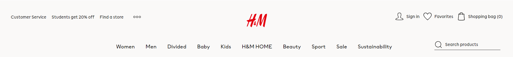

Example 1
Navigation Organism
The Navigation Organism is a comprehensive component featuring a Navbar with various elements. It includes navigation links, the iconic H&M logo, a search input field accompanied by a search icon, and buttons such as 'Sign In'. Additionally, it provides category links like 'Mens', 'Kids', 'Women', and more. This organism serves as a central hub for user interaction and exploration within the application.